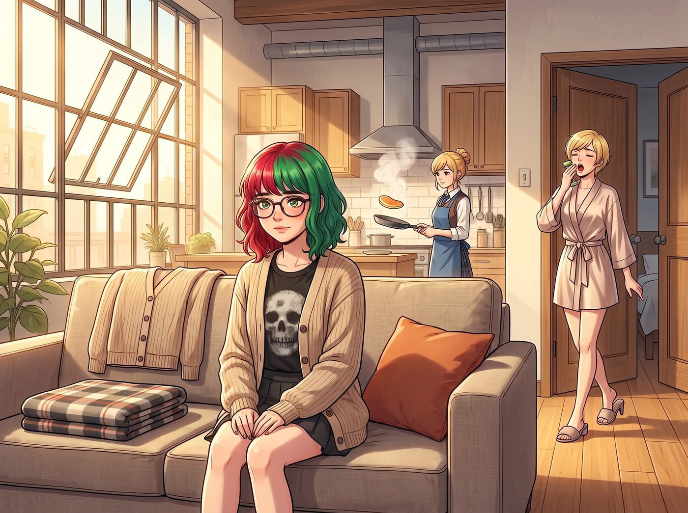
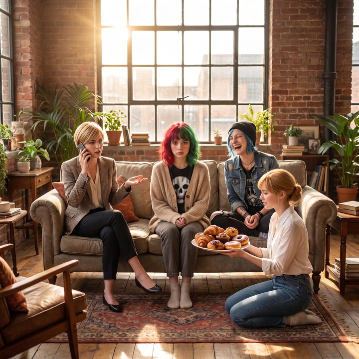

危險等級：溫暖（倒敘）


晚上十一點半，波特蘭的雨越下越大。
Chloe 的破皮卡停在 PNCA 新生宿舍樓外兩條街的地方。車廂裡，Max 抱著相機，看著遠處宿舍大門口那個猶如地獄犬般來回巡視的宿管大媽 Brenda，絕望地嚥了一口唾沫。
一、慫掉的大四鹹魚
「不行，我慫了。」Max 痛苦地揉著太陽穴，「現在超過宵禁一個半小時。如果 Brenda 抓到我把一個大一新生拐出去聽了龐克、吃了垃圾食品，她一定會把我的畢業設計連同我的靈魂一起撕碎。」
「切，瞧妳這點出息。」Chloe 翻了個白眼，轉頭看向夾在她們中間、已經因為超過適度叛逆時間表而瑟瑟發抖的 Lily。
十八歲的 Lily 緊緊抓著安全帶，臉色蒼白，大腦正在瘋狂計算違規成本：「根據宿舍管理條例，未經填寫夜間缺席申請表而在校外留宿，將面臨一級警告，並強制參加八小時的校園社區勞動……我的學術信用評級要破產了……」
「閉嘴，大學生。妳的信用評級現在歸我管了。」Chloe 猛地一打方向盤，皮卡在雨夜裡來了個囂張的掉頭，「Max，我們回珍珠區。今晚這隻迷路的小白兔歸我們了。」
半小時後，Lily 被強行綁架到了波特蘭市中心珍珠區的一棟由舊工廠改造的工業風Loft裡。這是 Chloe、Max，以及另外兩位舊識——Victoria 和 Kate，共同合租的地方。
二、優衣庫特價款NPC
第二天清晨，陽光透過巨大的工業鐵框窗戶灑進客廳。
Lily 在客廳的布藝沙發上準時於早上七點醒來。即使睡在別人的沙發上，她依然保持著令人髮指的自律：借來的法蘭絨毯子被她折成了完美的九十度直角，而她那件標誌性的米色針織衫，則被平整地鋪在沙發靠背上，連一絲皺褶都沒有。
這時，開放式廚房裡傳來了平底鍋的滋滋聲和陣陣誘人的香氣。Kate 穿著圍裙，正在熟練地翻烤著鬆餅。而伴隨著高跟拖鞋踩在木地板上的清脆聲響，臥室的門開了，Victoria 穿著一襲價值不菲的真絲晨袍，手裡拿著一個玉石滾輪，一邊按摩著臉頰，一邊打著哈欠走了出來。
「Max 昨晚又把那些刺鼻的顯影液倒進水槽裡了，對吧？下水道有一股……」Victoria 的抱怨戛然而止。
她那雙挑剔的、看慣了高定服裝的眼睛，死死地盯著端坐在沙發上的 Lily。從那副土氣的圓框眼鏡，到那件毫無設計感的米色針織衫，再到 Lily 那種雙手交疊在膝蓋上、彷彿隨時準備接受面試的拘謹坐姿，Victoria 的審美防線受到了毀滅性的打擊。
「Max！Chloe！」Victoria 尖叫起來，「妳們昨晚是去收容所做義工了嗎？為什麼我們的客廳裡坐著一個穿著優衣庫特價款的NPC？！」
三、電路審批的降維打擊
Lily 立刻站了起來，標準地鞠了一個九十度的躬。
「早安，這位女士。我是 PNCA 的大一新生，非常抱歉昨晚未經預約非法入侵了您的私人領地。」Lily 推了推眼鏡，目光猶如掃描儀一般掃過 Victoria 的真絲睡袍，以及廚房裡那台價值上萬美元的義大利進口半自動咖啡機。
然後，十八歲的合規機器人開口了：「不過，基於我對周邊環境的觀察，這棟建築屬於波特蘭市的輕工業區劃。根據市政法規，將此類工業廠房改造成具備全套衛浴和高功率烹飪設備的住宅，需要申請混合用途變更許可。您廚房裡那台需要獨立高壓供電的咖啡機，顯然沒有通過消防局的電路增容審批。如果遭到檢舉，您可能面臨每日五百美元的罰款。」
空氣突然安靜了。剛從臥室裡揉著雞窩頭走出來的 Chloe，恰好聽到了這段話。她靠在門框上，差點笑得背過氣去。
Victoria 愣在原地，手裡的玉石滾輪差點掉在地上。作為財閥家族的繼承人，她習慣了別人對她品頭論足，或者嫉妒她的財富，但她這輩子，從來沒有被一個穿著米色針織衫的黃毛丫頭，用違章建築和電路合規來進行過降維打擊。
「妳……妳在說什麼鬼話？！」Victoria 氣得臉頰通紅，指著 Lily，「我是 Victoria Chase！這棟房子的租金是我付的！妳居然敢查我的消防審批？！」
「法律面前，沒有階級之分，只有合規與違規，Chase 小姐。」Lily 認真地回答，甚至還從口袋裡掏出了一個小本子準備記錄。
「夠了夠了，大學生，快收起妳的罰單吧。」Chloe 狂笑著走過來，一把摟住 Lily 的肩膀，「Victoria，別惹她，這傢伙昨晚剛在唱片店裡把某支經典龐克樂團的無政府主義按在稅務報表上摩擦了一頓。她可是個冷酷無情的法規終結者。」
四、無法計算的鬆餅
就在這時，一盤熱騰騰的、淋著楓糖漿和融化奶油的鬆餅，被輕輕放在了 Lily 面前的茶几上。
Kate 雙手在圍裙上擦了擦，對著防備心極重的 Lily 露出了一個無比溫柔、毫無雜質的笑容。
「別理她們，昨晚一定嚇壞了吧？」Kate 溫柔地說，「我剛好還烤了些新鮮草莓可以加，妳看看喜不喜歡，快趁熱吃吧。如果有什麼忌口隨時告訴我。」
Lily 呆呆地看著那盤精緻的鬆餅，又看了看 Kate 那張彷彿散發著聖光的臉。
在 Lily 那個由邏輯、規則和等價交換構建的世界裡，沒有無緣無故的愛。她的大腦開始瘋狂運轉，試圖為這盤鬆餅尋找一個合理的行政解釋。
「請問……」Lily 警惕地推了推眼鏡，聲音裡透著一絲不解，「這是一項入會測試嗎？還是某種基於未來勞動力剝削的預付期權？如果我吃下這盤熱量超標的碳水化合物，我需要為這個團隊提供多少小時的無償家政服務作為對沖？」
Kate 愣了一下，隨後忍不住噗嗤一聲笑了出來。她像一個看著笨拙小貓的溫柔大姐姐，輕輕伸手揉了揉 Lily 那梳得一絲不苟的頭髮。「這只是一頓早餐，Lily。不需要簽合同，也不用還債。歡迎來到我們的瘋人院。」
五、系統高度混亂，但危險等級：溫暖
Lily 僵硬地坐在沙發上。
左邊，是正試圖打電話給房地產經紀人確認電路審批的名媛 Victoria；右邊，是笑得前仰後合的街頭混混 Chloe；面前，是一個用不求回報的碳水化合物徹底擊潰了她邏輯防線的溫柔天使 Kate；而身後，大四鹹魚 Max 正舉著寶麗來相機，將這混亂而奇妙的第一次同框永遠定格。
十八歲的 Lily 拿起叉子，小心翼翼地切了一小塊鬆餅放進嘴裡。甜美的楓糖漿在舌尖散開。她在心裡默默地將這個小團體，標記為：
「系統高度混亂，但……危險等級評估為：溫暖。」